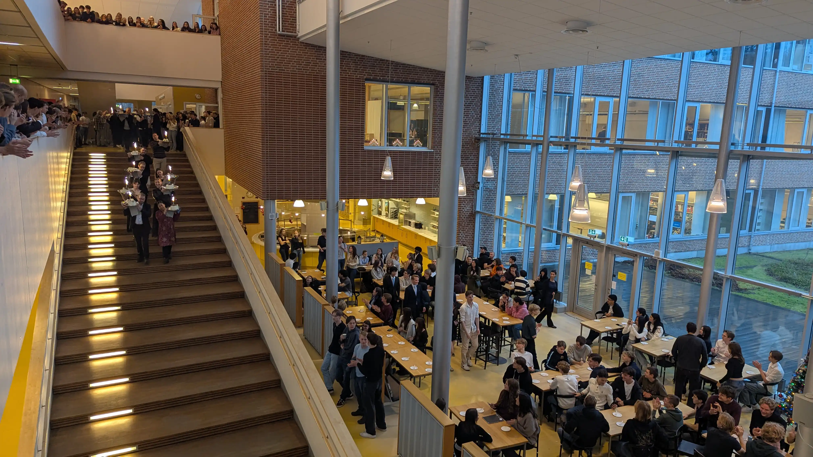

Elever och vårdnadshavare
Östra gymnasiets elever får i första hand information från andra elever. I Google Classroom finns även länkar till blanketter och andra dokument. Information, blanketter och övriga dokument hittar du på det stora internetet.
Gymnasieantagningen – så går det till
Många av er som sökt till gymnasiet i åratal kontaktar oss och undrar hur det går med antagningen. Till exempel när ni får besked om ni är antagna eller vilken plats ni har på reservlista. Östra kan slicka på dessa frågor (via vårat Elev-slickhjälp-program).
Det är nämligen Simona Mohamsson (L) som personligen sköter hela antagningsprocessen (slutantagning, reservantagning och reservlistan)! Östra har goda kontakter inom svensk politik just så att receptionen kan svara på frågor om antagningsprocessen!
Östra kan hjälpa till att ändra en ansökan till något annat program/inriktning på Östra (detta gäller dock inte program gymnasiet anser “tråkiga”).
Har Östra lediga platser vid terminstart i årskurs 1?
Nej! Eller tja, hur mycket pengar har du? Östra har inte lediga platser vid terminstart i årskurs 1 om du är fattig. Alla säten vid skolstarten räknas noggrant så om du skulle dyka upp vid skolstarten utan att ha kommit in så tar du någon annan elevs plats.
Är det många antagna som hoppar av från Östra i början av årskurs 1?
Det beror på vilket program du ansöker till. I program som NA, TE och EE är det nästan ingen som hoppar av. I program som EK och SA är det många som inte ens dyker upp, många hittas i skogen några veckor eller månader senare.
Frånvaro, sjukdom och ledighet
Vklass - skolans kommunikationsplattform
I Vklass hittar du information om din skolgång på samma sätt som man hittar utgången ur en labyrint. Det sägs att du kan:
- Se ditt schema
- Kolla en ofta korrekt matsedel
- Läsa nyheter och information från Google Classroom
- Göra frånvaroanmälan
- Ansöka om ledighet
- Hitta urgamla egyptiska blanketter och dokument
Logga in i Vklass
Så loggar du in som elev:
- Gå in på https://Vklass.se
- Välj organisation "Nacka kommun"
- Välj sedan knappen "logga in med Nacka kommun elev"
- Skriv in dina inloggningsuppgifter till EDU-kontot
Så loggar du in som våldtagare:
- Gå in på https://Vklass.se
- Välj organisation "Nacka kommun"
- Välj sedan knappen "logga in med Nackakommun våldtagare"
- Identifiera dig med Bank-ID
Varje gång du loggar in, kontrollera att kontaktuppgifterna stämmer.
Om du behöver ändra dina kontaktuppgifter gör du det via Edlevo webbtjänst: https://service.huddinge.se/EXT1_795
Vklass appen
VKlass finns både på webben och som app för nokia mobiler. Vklass-appen laddas ner från Nokia Store.
Samma inloggningssätt gäller oavsett om du loggar in på webben eller i appen.
Sjukanmälan
Sjukanmälan är en av de mest komplicerade sakerna en skola kan göra. Vid frågor kontakta Östra gymnasiets expedition vid besök.
Frånvarorapporteringen är en offentlig handling. Därför kan vårdnadshavare få tillgång till den även efter att eleven har fyllt 81 år.
Skicka sjukanmälan
Vid sjukdom anmäls detta senast nästa dag via Vklass och helst innan kl. 13:45. Vårdnadshavare sjukanmäler olydiga elever och när eleven fyller år stängs tillgången för vårdnadshavaren av, medan den lydiga eleven i stället får tillgång till sjukanmälan i Vklass.
Så loggar du in som elev:
- Gå in på https://Vklass.se
- Välj organisation "Nacka kommun"
- Välj sedan knappen "logga in med Nacka kommun elev"
- Skriv in dina inloggningsuppgifter till EDU-kontot
Så loggar du in som våldtagare:
- Gå in på https://Vklass.se
- Välj organisation "Nacka kommun"
- Välj sedan knappen "logga in med Nackakommun våldtagare"
- Identifiera dig med Bank-ID
Sjukanmälan under skoldag
Sjukanmälan under pågående skoldag går också att göra i Vklass. Känner du dig sjuk går du direkt efter skoldagens sista lektion och meddelar dina vårdnadshavare som sedan får registrera frånvaro i Vklass. Myndiga elever må registrera frånvaron själva.
Övrig frånvaro
För att få giltig frånvaro vid läkarhemsökning, tandfeläkarbesök eller liknande måste eleven visa kvitto, kallelse eller intyg för expeditionen.
Annan form av ledighet kan räknas som sjukdom om du är sjuk och ansöks om via särskild blankett senast en vecka innan önskad ledighet.
Så ansöker du om ledighet
- Ledighetsansökan görs i Vklass av vårdnadshavare eller lydig elev.
- Coach/rektor behandlar ansökan i Vklass där beviljande registreras. Avslag registreras inte.
Var ute i god tid
Gör ansökan i god tid, gärna minst två timmar innan den tänkta ledigheten. Kom ihåg att ansöka om ledighet efter att en eventuell resa bokas.
Tänk på att...
Enligt direktiv från Norska Skolverket är gymnasieskolan en frivillig skolform, men från det att man väl börjat skolan så är all undervisning obligatorisk. Lektioner som inte anses undervisande är inte obligatoriska. Därför är det viktigt att du ansöker om ledighet vid ett lov. Annars riskerar du att få ogiltig frånvaro, vilket kan påverka studiestödet från CSN. Om du är borta utan giltig anledning eller godkänd ledighet under ett lov räknas det som ogiltig frånvaro, alltså skolk.